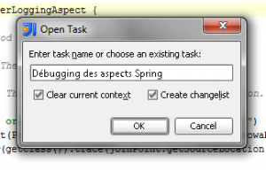

Here is my review of the IDE Jetbrains Intellij Idea 9 Ultimate Edition.
1. Introduction
JetBrains just released the 9 version of Intellij Idea. This version is available in two editions :
-
Community Edition : Opensource version and free. Contains only the basic functionalities of the IDE.
-
Ultimate Edition : Complete commercial version of the IDE. I am going to introduce here this version.
This IDE is principally made for Java development, but now supports also a lot of others languages : JavaScript/Flex, HTML/XHTML/CSS, XML/XSL, Ruby/JRuby, Groovy, SQL, FreeMarker/Velocity and PHP.
For Java Development, it supports numerous frameworks and technologies : JSP, JSF, EJB, AJAX, GWT, Struts, Struts 2, JBoss Seam, Spring, JPA/Hibernate, Web Services, Rails, Grails, Java ME MIDP/CLDC, Tapestry, Google App Engine, Android or OSGi.
I am going to introduce some of this news functionalités and give you my opinion about the different themes.

2. Installation
The installation is very easy. It's a common installer like all others instlallers you can found, with the basic operations : License, folder, shortcuts, start menu and finish. Nothing special about that.
Once installation is complete, we must enter the license and choose the modules to activate like it was already the case in the previous versions. précédentes versions.
3. General improvements
The first thing we note is a real improvement of performance. More tasks are made in background. This is the case for indexing who launches at start but doesn't block the user interface. Thus, we can start work during indexation but some actions are not available, like refactorings.

We can also see that there is much less freeze of graphical interface who is also more reactive. The feedback of the different actions has been improved. It seems that we can see that an action has been launched or done and we're not to ask us if something happens or not, like that can happens with Idea 8.
4. User Interface
As previously stated, the reactivity of the user interface has been greatly improved.
The views have not major changes, but we can still note that there is some interesting new functionalities.
First of all, we can now debug and launch directly from keyboard shortcuts :
- Alt+Shift+F9 : Open debbuging view
- Alt+Shift+F10 : Open launch view
Here are these new views :


Then, we've also a new bookmarks management functionality. We can now put bookmarks in every portion of code, either class or lines of code. We've now there shortcuts :
- F11 : Create a new bookmark at the selected item (file in project view or line of code in editor)
- Shift + F11 : Show the bookmarks and enable the user to go to one bookmark.
An example of bookmark on a line of code :
And the view of bookmarks :

And last but not least, we can now copy files/directory from operating system and paste them in Idea and vice-versa. That is very practice but was not available in the previous versions.
5. Maven support
The "Maven Projects" view has had little modifications. In the "Lifecycle" folder, only the main goals are displayed (clean, validate, compile, test, package, install, site et deploy) . I think it's a good thing, because we use especially these goals. Of course, we can display all the goals with an option in the tool bar.
Always in this view, we can now see the profiles (Maven 2 profiles) who are configured in settings.xml and go quickly to this settings.xml file. More than the profiles, we can now directly display the the dependencies of a project : Maven 2 :

We also have access to a dependency graph for a Maven module :

It is now possible to automatically reimport the Maven projects after a change in the pom.xml files.
For the reimport, we can now reimport only projects who have changes in their pom.xml or concerned by the others changes. More than this improvement, the speed of this operation has been improved by a factor of 3 or 4.
6. OSGI support
From this version, Idea natively integrate an OSGi plugin, Osmorc. This plugin try to make easier the development of OSGi applications in Idea. I'll try to show you the main functionalities who are now integrated in Idea.
The first thing to do is to configure the project for OSGi. To do that, we just need to activate the OSGi facet for the necessary modules. Then (or before, as you want), we must configure the installed OSGi instances.

Then, we must configure the instance to use for the project :

We can then go to the creation of a simple OSGi project.
The first functionality to note is of course the code completion of the MANIFEST.MF entries :

When you add the Import-Package header, we can use the classes of this package from the project without doing anything else.
But we can also define a Manifest file from Idea :

Et we continue with an activator :
package com.pragprog.hello;
import org.osgi.framework.BundleActivator;
import org.osgi.framework.BundleContext;
public class HelloWorld implements BundleActivator{
@Override
public void start(BundleContext bundleContext) throws Exception {
System.out.println("I'm in OSGi :)");
}
@Override
public void stop(BundleContext bundleContext) throws Exception {
System.out.println("I'm leaving OSGi :(");
}
}
To finish, we create a new run configuration "OSGi bundles". For That, we just need to add the bundle to the list and in the "Parameters" tab to choose the good OSGi instance to run :

And we launch the configuration, that give us :
But we cannot interact with the OSGi instance from Idea, that's not very practical. We cannot stop modules or either manage them from the console. But the OSGi development is still facilitated by Idea. But it would have been better to have something a bit more advanced.
7. PHP support
Here is a functionality who's perhaps not interesting for everybody but that will be interesting for the Java developers who manages a PHP site or simply for the PHP developers. For me, who manages also a PHP website, it's a great news. Before that, i used other editors and IDE to edit my website, but now i can do everything from my favourite IDE.
First and of course, we have syntax highlighting of PHP files :

We also have automatic code completion for PHP functions :

But the IDE make more than simple code completion. In fact, it discovers automatically the fields and methods from a class and fields and methods from the standard library. You can see this functionalities in the next images :

Moreover, Idea also supports PHPDcod documentation and make code completion based on PHPDoc :

We can also note that it's possible to do PHP Debugging and unit tests with PHPUnit. But this is out of the scope of this article.
8. Task management
This functionnality isn't for me a major change, but it remains interesting. It enables the user to save state of view in a specified task.
A task save the current changelist, the open editions, the state of the project view, the run configurations and the breakpoints. If you work in two parts of a project, you can create two tasks and you have also the same properties when you switch from one to the other. And you can quickly commit only the changes of a task because of the decoupled changelists.

Then, it is possible to go to a specific task, who has for effect to save the state of the current task and restore the state of the task to open.

It's also possible to synchronize the different tasks with YouTrack or JIRA.
9. Miscellaneous
More that these new big news, there is many other changes that i will not detail including :
- It is now possible to create a module from a Grails/Griffon project in the same way we can import project from Eclipse. We can also create Griffon/Grails modules or applications.
- There is now a Spell Checking inspection for the code and resources who is enabled by default in this new version.
- The public classes and methods who aren't used are not directly shaded like it was already the case for unused private fields and methods.
- Grails support improvement with Griffon and Gradle support
- Android support
- Flex support improvements
10. Conclusion
To conclude, JetBrains has one more times demonstrated its expertise in Java IDE presenting an excellent new version full of new functionalities and improvements that made the Java development even better.
The only thing i had to complain in this version, is the lack of documentation of OSGi plugin and the limitations of the latter.
You can download IntelliJ Idea 9 on the official site.